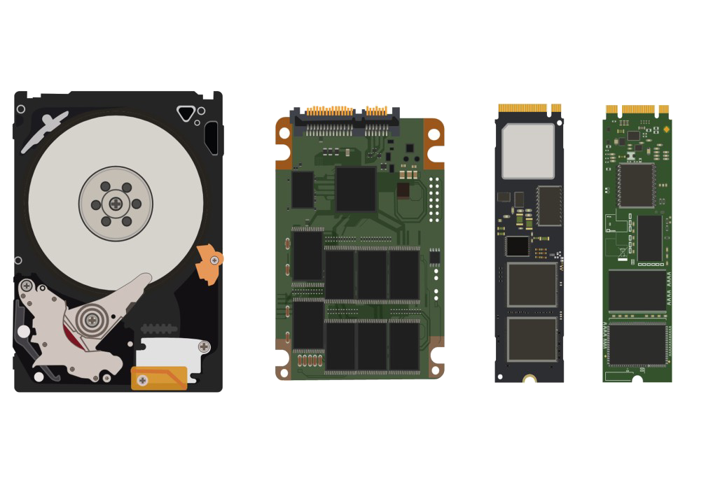
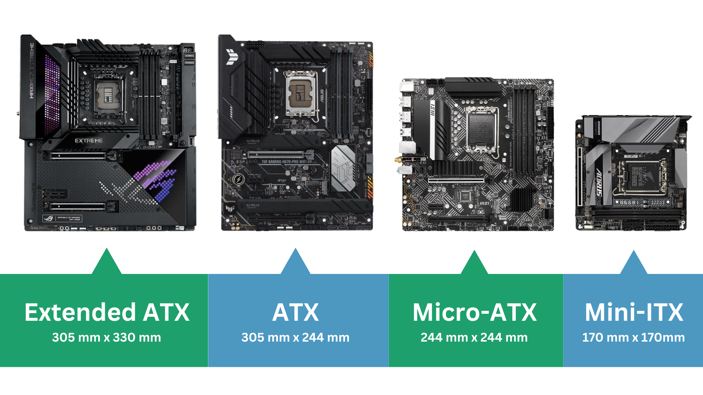
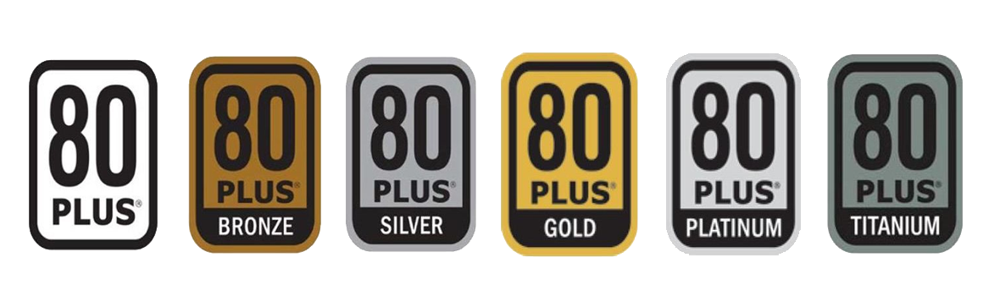

Intel
Popular Socket Types: LGA 1200, LGA 1700
Supported Generations: 10th Gen (Comet Lake), 11th Gen (Rocket Lake), 12th Gen (Alder Lake), 13th Gen (Raptor Lake), 14th Gen (Meteor Lake)
Pros: High single-core performance, excellent for gaming, wide compatibility with motherboards.
Cons: Generally more expensive, limited overclocking on non-K series CPUs.
CPU (Central Processing Unit)
The brain of the computer, responsible for executing instructions and processing data.
AMD
Popular Socket Types: AM4, AM5
Supported Generations: Ryzen 3000 (Zen 2), Ryzen 5000 (Zen 3), Ryzen 7000 (Zen 4), Ryzen 9000 (Zen 5)
Pros: Excellent multi-core performance, better value for productivity tasks, unlocked CPUs for overclocking.
Cons: Slightly lower single-core performance compared to Intel in some cases, fewer motherboard options for newer sockets.
GPU (Graphics Processing Unit)
Handles rendering of images, videos, and 3D graphics, essential for gaming and content creation.
NVIDIA
Board Partners: ASUS, MSI, Gigabyte, EVGA, Zotac, PNY
Pros: Excellent ray tracing performance, advanced features like DLSS (Deep Learning Super Sampling), wide range of options for gaming and professional use.
Cons: Generally more expensive, higher power consumption on high-end models.
AMD
Board Partners: ASUS, MSI, Gigabyte, Sapphire, PowerColor, XFX
Pros: Competitive pricing, strong performance in rasterization, good value for mid-range and budget builds.
Cons: Ray tracing performance lags behind NVIDIA, fewer features like DLSS (though FSR is improving).
Intel
Board Partners: ASUS, MSI, Gigabyte (limited availability as Intel GPUs are newer to the market)
Pros: Affordable entry-level options, improving driver support, good for casual gaming and productivity tasks.
Cons: Limited high-end options, smaller ecosystem compared to NVIDIA and AMD.
RAM (Random Access Memory)
DDR4
The most common type of RAM, offering high speed and efficiency. Suitable for most modern systems.
DDR5
The latest generation of RAM, providing faster speeds and improved power efficiency compared to DDR4. Ideal for high-performance systems.
SoDIMM (Small Outline Dual In-line Memory Module)
A compact form factor of RAM designed for laptops and small form factor PCs. It provides similar performance to standard DIMMs but in a smaller size.
Storage
HDD (Hard Disk Drive)
Traditional storage device with spinning disks. It offers large capacities at a lower cost but is slower compared to SSDs.
SSD (Solid State Drive)
Faster storage with no moving parts. It provides quicker boot times, faster file transfers, and improved application loading speeds.
M.2
A form factor for SSDs that connects directly to the motherboard. It is compact and often faster than traditional SATA SSDs.
NVMe (Non-Volatile Memory Express)
A protocol for SSDs that offers significantly faster data transfer speeds compared to SATA SSDs, ideal for high-performance tasks.

Motherboard
The backbone of the PC, connecting all components and allowing them to communicate.
Sizes
E-ATX (Extended ATX): Larger than ATX, offers more space for additional components, ideal for high-end builds.
ATX: Standard size with multiple expansion slots, suitable for most builds.
Micro-ATX: Smaller than ATX, fewer expansion slots, ideal for compact builds.
Mini-ITX: Very compact, limited slots, great for small form factor systems.
Chipset Types
Entry-Level: Basic features, suitable for budget builds (e.g., Intel H-series, AMD A-series).
Mid-Range: More connectivity and features, supports overclocking (e.g., Intel B-series, AMD B-series).
High-End: Advanced features, multiple PCIe lanes, ideal for enthusiasts (e.g., Intel Z-series, AMD X-series).

Power Supply Unit (PSU)
Provides power to all components in your PC, ensuring stable and efficient operation.
80 Plus
At least 80% efficiency at 20%, 50%, and 100% load.
80 Plus Bronze
Higher efficiency than standard 80 Plus, typically around 82-85%.
80 Plus Silver
Offers 85-88% efficiency.
80 Plus Gold
Provides 87-90% efficiency, a popular choice for most builds.
80 Plus Platinum
Delivers 89-92% efficiency, ideal for high-performance systems.
80 Plus Titanium
The highest efficiency, reaching 90-94%, suitable for premium builds.

Cooling
Essential for maintaining optimal temperatures and performance of your components.
Air Cooling
Uses fans and heatsinks to dissipate heat from components.
Pros: Affordable, easy to install, low maintenance.
Cons: Limited cooling efficiency, can be noisy.
Liquid Cooling
Uses liquid coolant to transfer heat away from components.
Pros: Superior cooling performance, quieter operation, ideal for overclocking.
Cons: More expensive, complex installation, potential for leaks.
Passive Cooling
Relies on heatsinks and natural airflow without fans.
Pros: Silent operation, no moving parts, low maintenance.
Cons: Limited cooling capacity, not suitable for high-performance systems.
Intel
Popular Socket Types: LGA 1200, LGA 1700
Supported Generations: 10th Gen (Comet Lake), 11th Gen (Rocket Lake), 12th Gen (Alder Lake), 13th Gen (Raptor Lake), 14th Gen (Meteor Lake)
Pros: High single-core performance, excellent for gaming, wide compatibility with motherboards.
Cons: Generally more expensive, limited overclocking on non-K series CPUs.
CPU (Central Processing Unit)
The brain of the computer, responsible for executing instructions and processing data.
AMD
Popular Socket Types: AM4, AM5
Supported Generations: Ryzen 3000 (Zen 2), Ryzen 5000 (Zen 3), Ryzen 7000 (Zen 4), Ryzen 9000 (Zen 5)
Pros: Excellent multi-core performance, better value for productivity tasks, unlocked CPUs for overclocking.
Cons: Slightly lower single-core performance compared to Intel in some cases, fewer motherboard options for newer sockets.
Slide 2
Content for Slide 2
Slide 3
Content for Slide 3